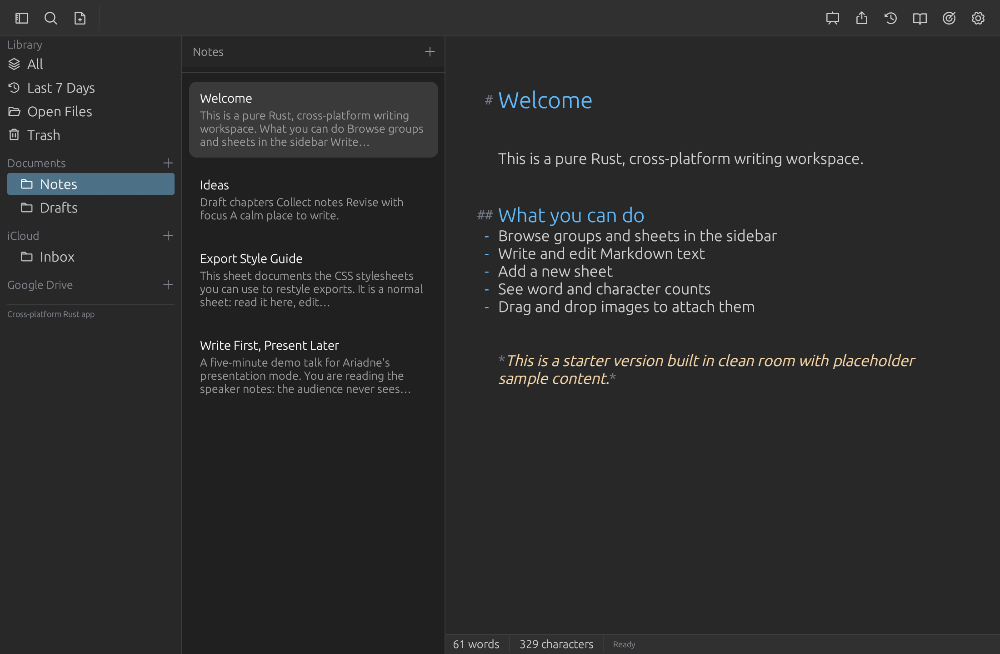
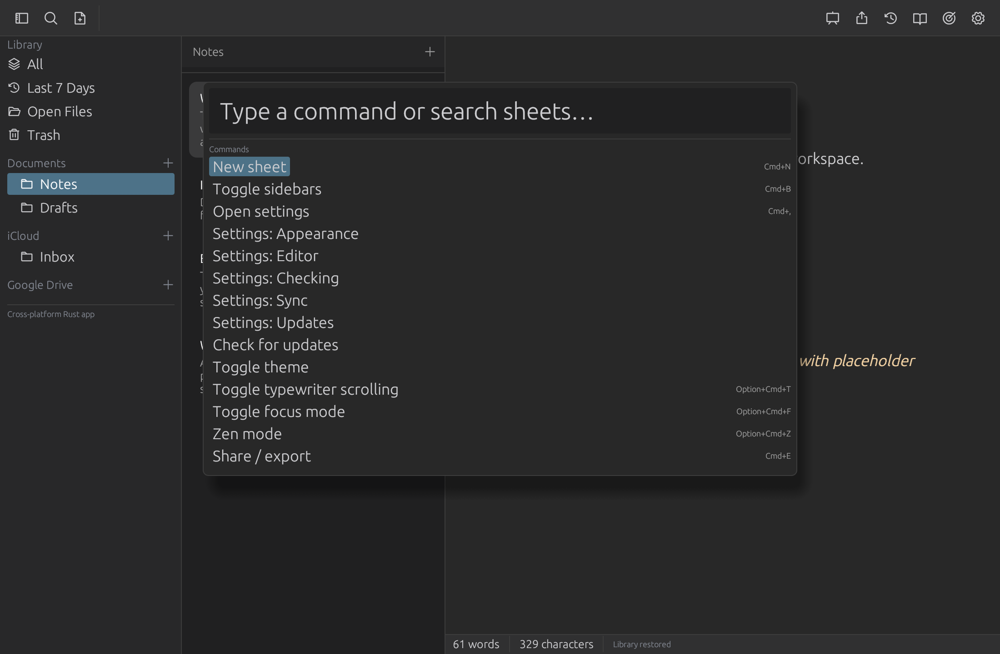
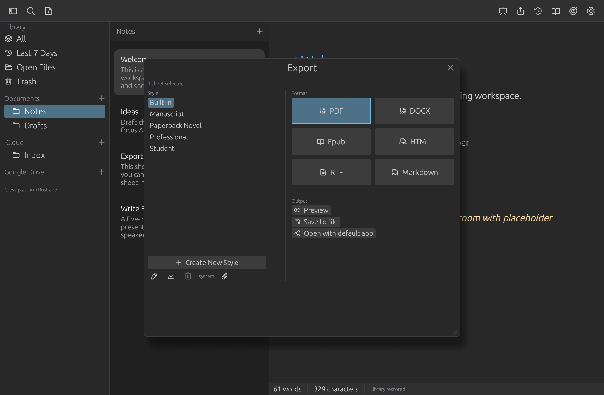
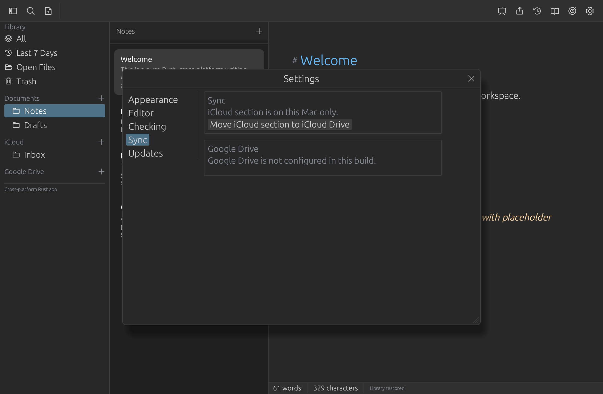
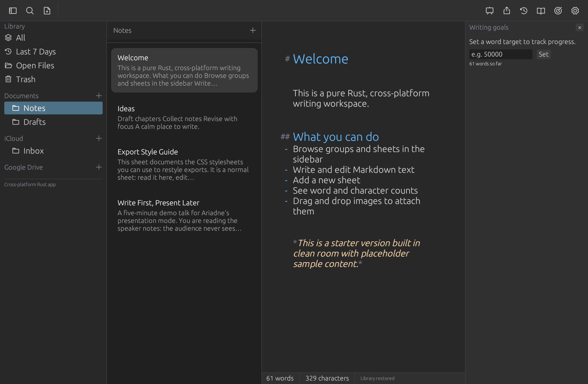
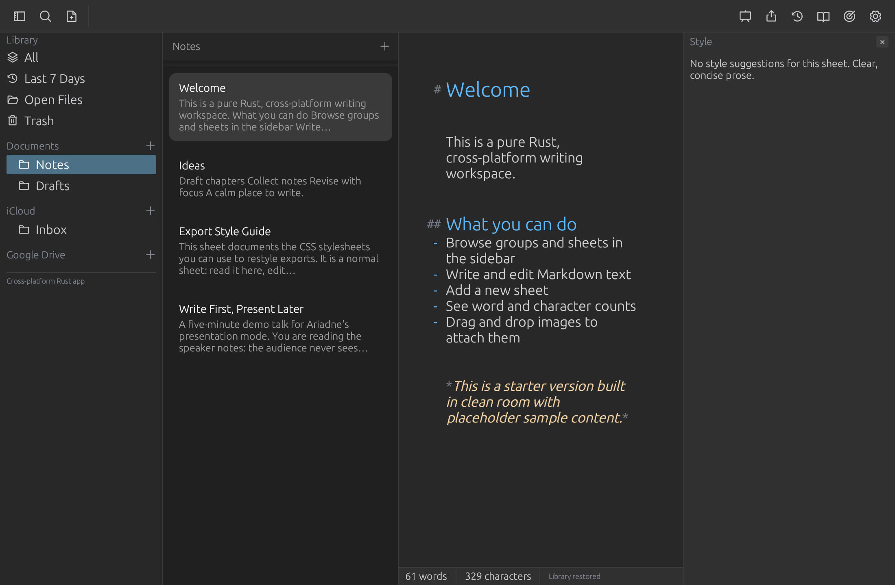
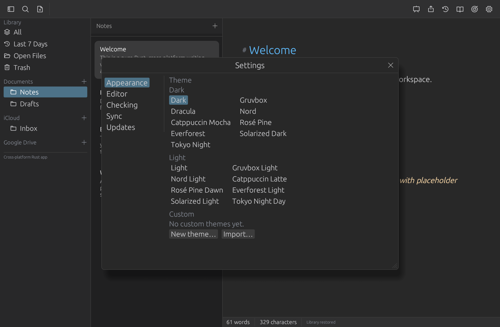

Pure Rust · macOS · Windows · Linux
All your writing,
in one place.
Ariadne is a cross-platform desktop writing workspace — one organized library for notes, drafts, and manuscripts, with smart filters, groups, command-palette search, sheet history, fully offline checking, and advanced styled export to Markdown, HTML, PDF, Word, RTF, and ePub. No web views, no account, no subscription.
Detecting the latest release…
Free and open source (MIT). Your words stay on your machine — sync is optional, through your own iCloud Drive or Google Drive. The browser build keeps its library in your browser (no sync); install it from the page for offline use.

One home for everything you write
Organize it your way, find anything instantly, ship it in any format.
Library & sheets
Smart filters (All, recent, open files, trash) plus Documents, iCloud, and Google Drive sections with groups of sheets — quick capture from the sheets header.
Organization tools
Fuzzy command-palette search, find in sheet, multi-select, per-sheet snapshots with restore, and per-library writing goals with live progress.
Markdown editor
Syntax tinting, lists, checklists, quotes, code, drag-and-drop images, typewriter / focus / zen modes, live word and character counts.
Advanced export
Markdown, HTML, PDF, Word (.docx), RTF, and ePub — built-in styles or your own CSS, export-only fonts, preview, save to file, or open with your default app.
Checking & style
Fully on-device spelling, grammar, and style with red/blue squiggles, click-to-jump notes, one-click fixes, and a synced custom dictionary.
Offline & private
No account, no telemetry. Your library stays on your machine; sync is optional, through your own iCloud Drive or Drive folder.
Also included: a present mode that turns headings into slides when you need it.
Screenshots
The real app, running natively.






Download
Unsigned native builds from GitHub Releases. Pick your OS:
| macOS (universal) | .dmg with Ariadne.app (arm64 + x86_64) |
|---|---|
| Windows (x64) | Setup installer (.exe) |
| Linux (x64) | .deb package · portable .tar.gz |
| Browser (PWA) | Run Ariadne in your browser · installs for offline use, library stays in the browser |
| Checksums | SHA256SUMS.txt |
First launch: macOS may require right-click → Open (unsigned build); Windows SmartScreen may show “More info → Run anyway”. Verify with SHA256SUMS.txt from the same release. Prefer source? cd app && cargo run --release.